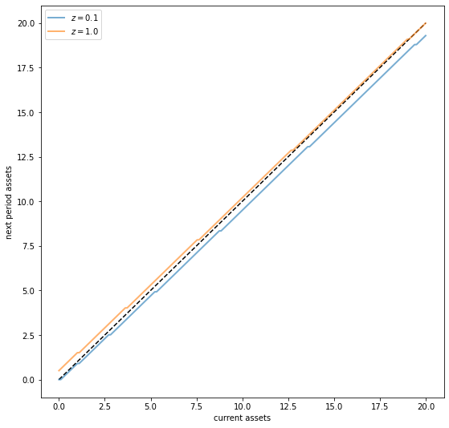
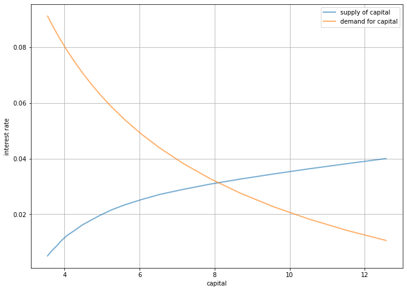

<!DOCTYPE html>

<html>
  <head>
    <meta charset="utf-8" />
    <meta name="viewport" content="width=device-width, initial-scale=1.0" /><meta name="generator" content="Docutils 0.17.1: http://docutils.sourceforge.net/" />

    <title>64. The Aiyagari Model &#8212; Quantitative Economics with Python</title>
    <script src="https://unpkg.com/@popperjs/core@2.9.2/dist/umd/popper.min.js"></script>
    <script src="https://unpkg.com/tippy.js@6.3.1/dist/tippy-bundle.umd.js"></script>
    <script src="https://cdn.jsdelivr.net/npm/feather-icons/dist/feather.min.js"></script>
    
        <script>
            MathJax = {
            loader: {load: ['[tex]/boldsymbol', '[tex]/textmacros']},
            tex: {
                packages: {'[+]': ['boldsymbol', 'textmacros']},
                inlineMath: [['$', '$'], ['\\(', '\\)']],
                processEscapes: true,
                macros: {
                    "argmax" : "arg\\,max",
                    "argmin" : "arg\\,min",
                    "col"    : "col",
                    "Span"   :  "span",
                    "epsilon": "\\varepsilon",
                    "EE": "\\mathbb{E}",
                    "PP": "\\mathbb{P}",
                    "RR": "\\mathbb{R}",
                    "NN": "\\mathbb{N}",
                    "ZZ": "\\mathbb{Z}",
                    "aA": "\\mathcal{A}",
                    "bB": "\\mathcal{B}",
                    "cC": "\\mathcal{C}",
                    "dD": "\\mathcal{D}",
                    "eE": "\\mathcal{E}",
                    "fF": "\\mathcal{F}",
                    "gG": "\\mathcal{G}",
                    "hH": "\\mathcal{H}",
                }
            },
            svg: {
                fontCache: 'global',
                scale: 0.92,
                displayAlign: "center",
            },
            };
        </script>
    
    
    
  <link href="_static/css/theme.css" rel="stylesheet">
  <link href="_static/css/index.ff1ffe594081f20da1ef19478df9384b.css" rel="stylesheet">

    
  <link rel="stylesheet"
    href="_static/vendor/fontawesome/5.13.0/css/all.min.css">
  <link rel="preload" as="font" type="font/woff2" crossorigin
    href="_static/vendor/fontawesome/5.13.0/webfonts/fa-solid-900.woff2">
  <link rel="preload" as="font" type="font/woff2" crossorigin
    href="_static/vendor/fontawesome/5.13.0/webfonts/fa-brands-400.woff2">

    
      

    
    <link rel="stylesheet" type="text/css" href="_static/pygments.css" />
    <link rel="stylesheet" type="text/css" href="_static/quantecon-book-theme.1ef59f8f4e91ec8319176e8479c6af4e.css" />
    <link rel="stylesheet" type="text/css" href="_static/togglebutton.css" />
    <link rel="stylesheet" type="text/css" href="_static/copybutton.css" />
    <link rel="stylesheet" type="text/css" href="_static/mystnb.css" />
    <link rel="stylesheet" type="text/css" href="_static/sphinx-thebe.css" />
    <link rel="stylesheet" type="text/css" href="_static/panels-main.c949a650a448cc0ae9fd3441c0e17fb0.css" />
    <link rel="stylesheet" type="text/css" href="_static/panels-variables.06eb56fa6e07937060861dad626602ad.css" />
    
  <link rel="preload" as="script" href="_static/js/index.be7d3bbb2ef33a8344ce.js">


    <script data-url_root="./" id="documentation_options" src="_static/documentation_options.js"></script>
    <script src="_static/jquery.js"></script>
    <script src="_static/underscore.js"></script>
    <script src="_static/doctools.js"></script>
    <script src="_static/clipboard.min.js"></script>
    <script src="_static/copybutton.js"></script>
    <script>let toggleHintShow = 'Click to show';</script>
    <script>let toggleHintHide = 'Click to hide';</script>
    <script>let toggleOpenOnPrint = 'true';</script>
    <script src="_static/togglebutton.js"></script>
    <script>var togglebuttonSelector = '.toggle, .admonition.dropdown, .tag_hide_input div.cell_input, .tag_hide-input div.cell_input, .tag_hide_output div.cell_output, .tag_hide-output div.cell_output, .tag_hide_cell.cell, .tag_hide-cell.cell';</script>
    <script src="_static/sphinx-book-theme.d59cb220de22ca1c485ebbdc042f0030.js"></script>
    <script src="_static/quantecon-book-theme.15b0c36fffe88f468997fa7b698991d3.js"></script>
    <script async="async" src="https://cdn.jsdelivr.net/npm/mathjax@3/es5/tex-mml-svg.js"></script>
    <script>window.MathJax = {"tex": {"macros": {"argmax": "arg\\,max", "argmin": "arg\\,min"}}, "options": {"processHtmlClass": "tex2jax_process|mathjax_process|math|output_area"}}</script>
    <script async="async" src="https://unpkg.com/thebe@0.5.1/lib/index.js"></script>
    <script>
        const thebe_selector = ".thebe"
        const thebe_selector_input = "pre"
        const thebe_selector_output = ".output"
    </script>
    <script async="async" src="_static/sphinx-thebe.js"></script>
    <link rel="canonical" href="https://python.quantecon.org/aiyagari.html" />
    <link rel="shortcut icon" href="_static/lectures-favicon.ico"/>
    <link rel="index" title="Index" href="genindex.html" />
    <link rel="search" title="Search" href="search.html" />
    <link rel="next" title="65. Asset Pricing: Finite State Models" href="markov_asset.html" />
    <link rel="prev" title="63. Uncertainty Traps" href="uncertainty_traps.html" />

<!-- Normal Meta Tags -->
<meta name="author" context="Thomas J. Sargent &amp; John Stachurski" />
<meta name="keywords" content="Python, QuantEcon, Quantitative Economics, Economics, Sloan, Alfred P. Sloan Foundation, Tom J. Sargent, John Stachurski" />
<meta name="description" content=This website presents a set of lectures on quantitative economic modeling, designed and written by Thomas J. Sargent and John Stachurski. />

<!-- Twitter tags -->
<meta name="twitter:card" content="summary" />
<meta name="twitter:site" content="@quantecon" />
<meta name="twitter:title" content="The Aiyagari Model"/>
<meta name="twitter:description" content="This website presents a set of lectures on quantitative economic modeling, designed and written by Thomas J. Sargent and John Stachurski.">
<meta name="twitter:creator" content="@quantecon">
<meta name="twitter:image" content="https://assets.quantecon.org/img/qe-twitter-logo.png">

<!-- Opengraph tags -->
<meta property="og:title" content="The Aiyagari Model" />
<meta property="og:type" content="website" />
<meta property="og:url" content="https://python.quantecon.org/aiyagari.html" />
<meta property="og:image" content="https://assets.quantecon.org/img/qe-og-logo.png" />
<meta property="og:description" content="This website presents a set of lectures on quantitative economic modeling, designed and written by Thomas J. Sargent and John Stachurski." />
<meta property="og:site_name" content="Quantitative Economics with Python" />
<meta name="theme-color" content="#ffffff" />

  </head>
<body>


    <span id="top"></span>

    <div class="qe-wrapper">

        <div class="qe-main">

            <div class="qe-page" id=aiyagari>

                <div class="qe-page__toc">

                    <div class="inner">

                        
                        <div class="qe-page__toc-header">
                            On this page
                        </div>


                        <nav id="bd-toc-nav" class="qe-page__toc-nav">
                            <ul class="visible nav section-nav flex-column">
 <li class="toc-h2 nav-item toc-entry">
  <a class="reference internal nav-link" href="#overview">
   64.1. Overview
  </a>
  <ul class="nav section-nav flex-column">
   <li class="toc-h3 nav-item toc-entry">
    <a class="reference internal nav-link" href="#references">
     64.1.1. References
    </a>
   </li>
  </ul>
 </li>
 <li class="toc-h2 nav-item toc-entry">
  <a class="reference internal nav-link" href="#the-economy">
   64.2. The Economy
  </a>
  <ul class="nav section-nav flex-column">
   <li class="toc-h3 nav-item toc-entry">
    <a class="reference internal nav-link" href="#households">
     64.2.1. Households
    </a>
   </li>
  </ul>
 </li>
 <li class="toc-h2 nav-item toc-entry">
  <a class="reference internal nav-link" href="#firms">
   64.3. Firms
  </a>
  <ul class="nav section-nav flex-column">
   <li class="toc-h3 nav-item toc-entry">
    <a class="reference internal nav-link" href="#equilibrium">
     64.3.1. Equilibrium
    </a>
   </li>
  </ul>
 </li>
 <li class="toc-h2 nav-item toc-entry">
  <a class="reference internal nav-link" href="#code">
   64.4. Code
  </a>
 </li>
</ul>

                            <p class="logo">
                                
                                    
                                    <a href=https://quantecon.org></a>
                                    
                                
                            </p>

                            <p class="powered">Powered by <a href="https://jupyterbook.org/">Jupyter Book</a></p>

                        </nav>

                        <div class="qe-page__toc-footer">
                            
                            
                            <p><a href="#top"><strong>Back to top</strong></a></p>
                        </div>

                    </div>

                </div>

                <div class="qe-page__header">

                    <div class="qe-page__header-copy">

                        <p class="qe-page__header-heading"><a href="intro.html">Quantitative Economics with Python</a></p>

                        <p class="qe-page__header-subheading">The Aiyagari Model</p>

                    </div>

                    <p class="qe-page__header-authors">Thomas J. Sargent & John Stachurski</p>

                </div> <!-- .page__header -->


                
                <main class="qe-page__content" role="main">
                    
                    <div>
                        
  <div id="qe-notebook-header" align="right" style="text-align:right;">
        <a href="https://quantecon.org/" title="quantecon.org">
                
        </a>
</div><section class="tex2jax_ignore mathjax_ignore" id="the-aiyagari-model">
<h1><a class="toc-backref" href="#id8"><span class="section-number">64. </span>The Aiyagari Model</a><a class="headerlink" href="#the-aiyagari-model" title="Permalink to this headline">¶</a></h1>
<div class="contents topic" id="contents">
<p class="topic-title">Contents</p>
<ul class="simple">
<li><p><a class="reference internal" href="#the-aiyagari-model" id="id8">The Aiyagari Model</a></p>
<ul>
<li><p><a class="reference internal" href="#overview" id="id9">Overview</a></p></li>
<li><p><a class="reference internal" href="#the-economy" id="id10">The Economy</a></p></li>
<li><p><a class="reference internal" href="#firms" id="id11">Firms</a></p></li>
<li><p><a class="reference internal" href="#code" id="id12">Code</a></p></li>
</ul>
</li>
</ul>
</div>
<p>In addition to what’s in Anaconda, this lecture will need the following libraries:</p>
<div class="cell tag_hide-output docutils container">
<div class="cell_input docutils container">
<div class="highlight-ipython3 notranslate"><div class="highlight"><pre><span></span><span class="o">!</span>conda install -y quantecon
</pre></div>
</div>
</div>
<div class="cell_output docutils container">
<div class="output stream highlight-myst-ansi notranslate"><div class="highlight"><pre><span></span>Collecting package metadata (current_repodata.json): - 
</pre></div>
</div>
<div class="output stream highlight-myst-ansi notranslate"><div class="highlight"><pre><span></span>\ 
</pre></div>
</div>
<div class="output stream highlight-myst-ansi notranslate"><div class="highlight"><pre><span></span>| 
</pre></div>
</div>
<div class="output stream highlight-myst-ansi notranslate"><div class="highlight"><pre><span></span>/ 
</pre></div>
</div>
<div class="output stream highlight-myst-ansi notranslate"><div class="highlight"><pre><span></span>- 
</pre></div>
</div>
<div class="output stream highlight-myst-ansi notranslate"><div class="highlight"><pre><span></span>\ 
</pre></div>
</div>
<div class="output stream highlight-myst-ansi notranslate"><div class="highlight"><pre><span></span>| 
</pre></div>
</div>
<div class="output stream highlight-myst-ansi notranslate"><div class="highlight"><pre><span></span>/ 
</pre></div>
</div>
<div class="output stream highlight-myst-ansi notranslate"><div class="highlight"><pre><span></span>- 
</pre></div>
</div>
<div class="output stream highlight-myst-ansi notranslate"><div class="highlight"><pre><span></span>\ 
</pre></div>
</div>
<div class="output stream highlight-myst-ansi notranslate"><div class="highlight"><pre><span></span>| 
</pre></div>
</div>
<div class="output stream highlight-myst-ansi notranslate"><div class="highlight"><pre><span></span>/ 
</pre></div>
</div>
<div class="output stream highlight-myst-ansi notranslate"><div class="highlight"><pre><span></span>- 
</pre></div>
</div>
<div class="output stream highlight-myst-ansi notranslate"><div class="highlight"><pre><span></span>\ 
</pre></div>
</div>
<div class="output stream highlight-myst-ansi notranslate"><div class="highlight"><pre><span></span>| 
</pre></div>
</div>
<div class="output stream highlight-myst-ansi notranslate"><div class="highlight"><pre><span></span>done
Solving environment: - 
</pre></div>
</div>
<div class="output stream highlight-myst-ansi notranslate"><div class="highlight"><pre><span></span>\ 
</pre></div>
</div>
<div class="output stream highlight-myst-ansi notranslate"><div class="highlight"><pre><span></span>| 
</pre></div>
</div>
<div class="output stream highlight-myst-ansi notranslate"><div class="highlight"><pre><span></span>/ 
</pre></div>
</div>
<div class="output stream highlight-myst-ansi notranslate"><div class="highlight"><pre><span></span>- 
</pre></div>
</div>
<div class="output stream highlight-myst-ansi notranslate"><div class="highlight"><pre><span></span>\ 
</pre></div>
</div>
<div class="output stream highlight-myst-ansi notranslate"><div class="highlight"><pre><span></span>| 
</pre></div>
</div>
<div class="output stream highlight-myst-ansi notranslate"><div class="highlight"><pre><span></span>/ 
</pre></div>
</div>
<div class="output stream highlight-myst-ansi notranslate"><div class="highlight"><pre><span></span>- 
</pre></div>
</div>
<div class="output stream highlight-myst-ansi notranslate"><div class="highlight"><pre><span></span>\ 
</pre></div>
</div>
<div class="output stream highlight-myst-ansi notranslate"><div class="highlight"><pre><span></span>| 
</pre></div>
</div>
<div class="output stream highlight-myst-ansi notranslate"><div class="highlight"><pre><span></span>/ 
</pre></div>
</div>
<div class="output stream highlight-myst-ansi notranslate"><div class="highlight"><pre><span></span>- 
</pre></div>
</div>
<div class="output stream highlight-myst-ansi notranslate"><div class="highlight"><pre><span></span>\ 
</pre></div>
</div>
<div class="output stream highlight-myst-ansi notranslate"><div class="highlight"><pre><span></span>| 
</pre></div>
</div>
<div class="output stream highlight-myst-ansi notranslate"><div class="highlight"><pre><span></span>/ 
</pre></div>
</div>
<div class="output stream highlight-myst-ansi notranslate"><div class="highlight"><pre><span></span>- 
</pre></div>
</div>
<div class="output stream highlight-myst-ansi notranslate"><div class="highlight"><pre><span></span>\ 
</pre></div>
</div>
<div class="output stream highlight-myst-ansi notranslate"><div class="highlight"><pre><span></span>| 
</pre></div>
</div>
<div class="output stream highlight-myst-ansi notranslate"><div class="highlight"><pre><span></span>/ 
</pre></div>
</div>
<div class="output stream highlight-myst-ansi notranslate"><div class="highlight"><pre><span></span>- 
</pre></div>
</div>
<div class="output stream highlight-myst-ansi notranslate"><div class="highlight"><pre><span></span>\ 
</pre></div>
</div>
<div class="output stream highlight-myst-ansi notranslate"><div class="highlight"><pre><span></span>| 
</pre></div>
</div>
<div class="output stream highlight-myst-ansi notranslate"><div class="highlight"><pre><span></span>/ 
</pre></div>
</div>
<div class="output stream highlight-myst-ansi notranslate"><div class="highlight"><pre><span></span>- 
</pre></div>
</div>
<div class="output stream highlight-myst-ansi notranslate"><div class="highlight"><pre><span></span>\ 
</pre></div>
</div>
<div class="output stream highlight-myst-ansi notranslate"><div class="highlight"><pre><span></span>| 
</pre></div>
</div>
<div class="output stream highlight-myst-ansi notranslate"><div class="highlight"><pre><span></span>/ 
</pre></div>
</div>
<div class="output stream highlight-myst-ansi notranslate"><div class="highlight"><pre><span></span>done
</pre></div>
</div>
<div class="output stream highlight-myst-ansi notranslate"><div class="highlight"><pre><span></span># All requested packages already installed.
</pre></div>
</div>
</div>
</div>
<section id="overview">
<h2><a class="toc-backref" href="#id9"><span class="section-number">64.1. </span>Overview</a><a class="headerlink" href="#overview" title="Permalink to this headline">¶</a></h2>
<p>In this lecture, we describe the structure of a class of models that build on work by Truman Bewley <span id="id1">[<a class="reference internal" href="zreferences.html#id160">Bew77</a>]</span>.</p>
<p>We begin by discussing an example of a Bewley model due to Rao Aiyagari <span id="id2">[<a class="reference internal" href="zreferences.html#id124">Aiy94</a>]</span>.</p>
<p>The model features</p>
<ul class="simple">
<li><p>Heterogeneous agents</p></li>
<li><p>A single exogenous vehicle for borrowing and lending</p></li>
<li><p>Limits on amounts individual agents may borrow</p></li>
</ul>
<p>The Aiyagari model has been used to investigate many topics, including</p>
<ul class="simple">
<li><p>precautionary savings and the effect of liquidity constraints <span id="id3">[<a class="reference internal" href="zreferences.html#id124">Aiy94</a>]</span></p></li>
<li><p>risk sharing and asset pricing <span id="id4">[<a class="reference internal" href="zreferences.html#id116">HL96</a>]</span></p></li>
<li><p>the shape of the wealth distribution <span id="id5">[<a class="reference internal" href="zreferences.html#id117">BBZ15</a>]</span></p></li>
<li><p>etc., etc., etc.</p></li>
</ul>
<p>Let’s start with some imports:</p>
<div class="cell docutils container">
<div class="cell_input docutils container">
<div class="highlight-ipython3 notranslate"><div class="highlight"><pre><span></span><span class="o">%</span><span class="k">matplotlib</span> inline
<span class="kn">import</span> <span class="nn">matplotlib.pyplot</span> <span class="k">as</span> <span class="nn">plt</span>
<span class="n">plt</span><span class="o">.</span><span class="n">rcParams</span><span class="p">[</span><span class="s2">&quot;figure.figsize&quot;</span><span class="p">]</span> <span class="o">=</span> <span class="p">(</span><span class="mi">11</span><span class="p">,</span> <span class="mi">5</span><span class="p">)</span>  <span class="c1">#set default figure size</span>
<span class="kn">import</span> <span class="nn">numpy</span> <span class="k">as</span> <span class="nn">np</span>
<span class="kn">import</span> <span class="nn">quantecon</span> <span class="k">as</span> <span class="nn">qe</span>
<span class="kn">from</span> <span class="nn">quantecon.markov</span> <span class="kn">import</span> <span class="n">DiscreteDP</span>
<span class="kn">from</span> <span class="nn">numba</span> <span class="kn">import</span> <span class="n">jit</span>
</pre></div>
</div>
</div>
</div>
<section id="references">
<h3><span class="section-number">64.1.1. </span>References<a class="headerlink" href="#references" title="Permalink to this headline">¶</a></h3>
<p>The primary reference for this lecture is <span id="id6">[<a class="reference internal" href="zreferences.html#id124">Aiy94</a>]</span>.</p>
<p>A textbook treatment is available in chapter 18 of <span id="id7">[<a class="reference internal" href="zreferences.html#id169">LS18</a>]</span>.</p>
<p>A continuous time version of the model by SeHyoun Ahn and Benjamin Moll can be found <a class="reference external" href="http://nbviewer.jupyter.org/github/QuantEcon/QuantEcon.notebooks/blob/master/aiyagari_continuous_time.ipynb">here</a>.</p>
</section>
</section>
<section id="the-economy">
<h2><a class="toc-backref" href="#id10"><span class="section-number">64.2. </span>The Economy</a><a class="headerlink" href="#the-economy" title="Permalink to this headline">¶</a></h2>
<section id="households">
<h3><span class="section-number">64.2.1. </span>Households<a class="headerlink" href="#households" title="Permalink to this headline">¶</a></h3>
<p>Infinitely lived households / consumers face idiosyncratic income shocks.</p>
<p>A unit interval of  <em>ex-ante</em> identical households face a common borrowing constraint.</p>
<p>The savings problem faced by a typical  household is</p>
<div class="math notranslate nohighlight">
\[
\max \mathbb E \sum_{t=0}^{\infty} \beta^t u(c_t)
\]</div>
<p>subject to</p>
<div class="math notranslate nohighlight">
\[
a_{t+1} + c_t \leq w z_t + (1 + r) a_t
\quad
c_t \geq 0,
\quad \text{and} \quad
a_t \geq -B
\]</div>
<p>where</p>
<ul class="simple">
<li><p><span class="math notranslate nohighlight">\(c_t\)</span> is current consumption</p></li>
<li><p><span class="math notranslate nohighlight">\(a_t\)</span> is assets</p></li>
<li><p><span class="math notranslate nohighlight">\(z_t\)</span> is an exogenous component of labor income capturing stochastic unemployment risk, etc.</p></li>
<li><p><span class="math notranslate nohighlight">\(w\)</span> is a wage rate</p></li>
<li><p><span class="math notranslate nohighlight">\(r\)</span> is a net interest rate</p></li>
<li><p><span class="math notranslate nohighlight">\(B\)</span> is the maximum amount that the agent is allowed to borrow</p></li>
</ul>
<p>The exogenous process <span class="math notranslate nohighlight">\(\{z_t\}\)</span> follows a finite state Markov chain with given stochastic matrix <span class="math notranslate nohighlight">\(P\)</span>.</p>
<p>The wage and interest rate are fixed over time.</p>
<p>In this simple version of the model, households supply labor  inelastically because they do not value leisure.</p>
</section>
</section>
<section id="firms">
<h2><a class="toc-backref" href="#id11"><span class="section-number">64.3. </span>Firms</a><a class="headerlink" href="#firms" title="Permalink to this headline">¶</a></h2>
<p>Firms produce output by hiring capital and labor.</p>
<p>Firms act competitively and face constant returns to scale.</p>
<p>Since returns to scale are constant the number of firms does not matter.</p>
<p>Hence we can consider a single (but nonetheless competitive) representative firm.</p>
<p>The firm’s output is</p>
<div class="math notranslate nohighlight">
\[
Y_t = A K_t^{\alpha} N^{1 - \alpha}
\]</div>
<p>where</p>
<ul class="simple">
<li><p><span class="math notranslate nohighlight">\(A\)</span> and <span class="math notranslate nohighlight">\(\alpha\)</span> are parameters with <span class="math notranslate nohighlight">\(A &gt; 0\)</span> and <span class="math notranslate nohighlight">\(\alpha \in (0, 1)\)</span></p></li>
<li><p><span class="math notranslate nohighlight">\(K_t\)</span> is aggregate capital</p></li>
<li><p><span class="math notranslate nohighlight">\(N\)</span> is total labor supply (which is constant in this simple version of the model)</p></li>
</ul>
<p>The firm’s problem is</p>
<div class="math notranslate nohighlight">
\[
max_{K, N} \left\{ A K_t^{\alpha} N^{1 - \alpha} - (r + \delta) K - w N \right\}
\]</div>
<p>The parameter <span class="math notranslate nohighlight">\(\delta\)</span> is the depreciation rate.</p>
<p>From the first-order condition with respect to capital, the firm’s inverse demand for capital is</p>
<div class="math notranslate nohighlight" id="equation-aiy-rgk">
<span class="eqno">(64.1)<a class="headerlink" href="#equation-aiy-rgk" title="Permalink to this equation">¶</a></span>\[r = A \alpha  \left( \frac{N}{K} \right)^{1 - \alpha} - \delta\]</div>
<p>Using this expression and the firm’s first-order condition for labor, we can pin down
the equilibrium wage rate as a function of <span class="math notranslate nohighlight">\(r\)</span> as</p>
<div class="math notranslate nohighlight" id="equation-aiy-wgr">
<span class="eqno">(64.2)<a class="headerlink" href="#equation-aiy-wgr" title="Permalink to this equation">¶</a></span>\[w(r) = A  (1 - \alpha)  (A \alpha / (r + \delta))^{\alpha / (1 - \alpha)}\]</div>
<section id="equilibrium">
<h3><span class="section-number">64.3.1. </span>Equilibrium<a class="headerlink" href="#equilibrium" title="Permalink to this headline">¶</a></h3>
<p>We construct  a <em>stationary rational expectations equilibrium</em> (SREE).</p>
<p>In such an equilibrium</p>
<ul class="simple">
<li><p>prices induce behavior that generates aggregate quantities consistent with the prices</p></li>
<li><p>aggregate quantities and prices are constant over time</p></li>
</ul>
<p>In more detail, an SREE lists a set of prices, savings and production policies such that</p>
<ul class="simple">
<li><p>households want to choose the specified savings policies taking the prices as given</p></li>
<li><p>firms maximize profits taking the same prices as given</p></li>
<li><p>the resulting aggregate quantities are consistent with the prices; in particular, the demand for capital equals the supply</p></li>
<li><p>aggregate quantities (defined as cross-sectional averages) are constant</p></li>
</ul>
<p>In practice, once parameter values are set, we can check for an SREE by the following steps</p>
<ol class="simple">
<li><p>pick a proposed quantity <span class="math notranslate nohighlight">\(K\)</span> for aggregate capital</p></li>
<li><p>determine corresponding prices, with interest rate <span class="math notranslate nohighlight">\(r\)</span> determined by <a class="reference internal" href="#equation-aiy-rgk">(64.1)</a> and a wage rate <span class="math notranslate nohighlight">\(w(r)\)</span> as given in <a class="reference internal" href="#equation-aiy-wgr">(64.2)</a></p></li>
<li><p>determine the common optimal savings policy of the households given these prices</p></li>
<li><p>compute aggregate capital as the mean of steady state capital given this savings policy</p></li>
</ol>
<p>If this final quantity agrees with <span class="math notranslate nohighlight">\(K\)</span> then we have a SREE.</p>
</section>
</section>
<section id="code">
<h2><a class="toc-backref" href="#id12"><span class="section-number">64.4. </span>Code</a><a class="headerlink" href="#code" title="Permalink to this headline">¶</a></h2>
<p>Let’s look at how we might compute such an equilibrium in practice.</p>
<p>To solve the household’s dynamic programming problem we’ll use the <a class="reference external" href="https://github.com/QuantEcon/QuantEcon.py/blob/master/quantecon/markov/ddp.py">DiscreteDP</a> class from <a class="reference external" href="http://quantecon.org/quantecon-py">QuantEcon.py</a>.</p>
<p>Our first task is the least exciting one: write code that maps parameters for a household problem into the <code class="docutils literal notranslate"><span class="pre">R</span></code> and <code class="docutils literal notranslate"><span class="pre">Q</span></code> matrices needed to generate an instance of <code class="docutils literal notranslate"><span class="pre">DiscreteDP</span></code>.</p>
<p>Below is a piece of boilerplate code that does just this.</p>
<p>In reading the code, the following information will be helpful</p>
<ul class="simple">
<li><p><code class="docutils literal notranslate"><span class="pre">R</span></code> needs to be a matrix where <code class="docutils literal notranslate"><span class="pre">R[s,</span> <span class="pre">a]</span></code> is the reward at state <code class="docutils literal notranslate"><span class="pre">s</span></code> under action <code class="docutils literal notranslate"><span class="pre">a</span></code>.</p></li>
<li><p><code class="docutils literal notranslate"><span class="pre">Q</span></code> needs to be a three-dimensional array where <code class="docutils literal notranslate"><span class="pre">Q[s,</span> <span class="pre">a,</span> <span class="pre">s']</span></code> is the probability of transitioning to state <code class="docutils literal notranslate"><span class="pre">s'</span></code> when the current state is <code class="docutils literal notranslate"><span class="pre">s</span></code> and the current action is <code class="docutils literal notranslate"><span class="pre">a</span></code>.</p></li>
</ul>
<p>(A more detailed discussion of <code class="docutils literal notranslate"><span class="pre">DiscreteDP</span></code> is available in the <a class="reference external" href="https://python-advanced.quantecon.org/discrete_dp.html">Discrete State Dynamic Programming</a> lecture in the <a class="reference external" href="https://python-advanced.quantecon.org">Advanced
Quantitative Economics with Python</a> lecture series.)</p>
<p>Here we take the state to be <span class="math notranslate nohighlight">\(s_t := (a_t, z_t)\)</span>, where <span class="math notranslate nohighlight">\(a_t\)</span> is assets and <span class="math notranslate nohighlight">\(z_t\)</span> is the shock.</p>
<p>The action is the choice of next period asset level <span class="math notranslate nohighlight">\(a_{t+1}\)</span>.</p>
<p>We use Numba to speed up the loops so we can update the matrices efficiently
when the parameters change.</p>
<p>The class also includes a default set of parameters that we’ll adopt unless otherwise specified.</p>
<div class="cell docutils container">
<div class="cell_input docutils container">
<div class="highlight-ipython3 notranslate"><div class="highlight"><pre><span></span><span class="k">class</span> <span class="nc">Household</span><span class="p">:</span>
    <span class="sd">&quot;&quot;&quot;</span>
<span class="sd">    This class takes the parameters that define a household asset accumulation</span>
<span class="sd">    problem and computes the corresponding reward and transition matrices R</span>
<span class="sd">    and Q required to generate an instance of DiscreteDP, and thereby solve</span>
<span class="sd">    for the optimal policy.</span>

<span class="sd">    Comments on indexing: We need to enumerate the state space S as a sequence</span>
<span class="sd">    S = {0, ..., n}.  To this end, (a_i, z_i) index pairs are mapped to s_i</span>
<span class="sd">    indices according to the rule</span>

<span class="sd">        s_i = a_i * z_size + z_i</span>

<span class="sd">    To invert this map, use</span>

<span class="sd">        a_i = s_i // z_size  (integer division)</span>
<span class="sd">        z_i = s_i % z_size</span>

<span class="sd">    &quot;&quot;&quot;</span>


    <span class="k">def</span> <span class="fm">__init__</span><span class="p">(</span><span class="bp">self</span><span class="p">,</span>
                <span class="n">r</span><span class="o">=</span><span class="mf">0.01</span><span class="p">,</span>                      <span class="c1"># Interest rate</span>
                <span class="n">w</span><span class="o">=</span><span class="mf">1.0</span><span class="p">,</span>                       <span class="c1"># Wages</span>
                <span class="n">β</span><span class="o">=</span><span class="mf">0.96</span><span class="p">,</span>                      <span class="c1"># Discount factor</span>
                <span class="n">a_min</span><span class="o">=</span><span class="mf">1e-10</span><span class="p">,</span>
                <span class="n">Π</span><span class="o">=</span><span class="p">[[</span><span class="mf">0.9</span><span class="p">,</span> <span class="mf">0.1</span><span class="p">],</span> <span class="p">[</span><span class="mf">0.1</span><span class="p">,</span> <span class="mf">0.9</span><span class="p">]],</span>  <span class="c1"># Markov chain</span>
                <span class="n">z_vals</span><span class="o">=</span><span class="p">[</span><span class="mf">0.1</span><span class="p">,</span> <span class="mf">1.0</span><span class="p">],</span>           <span class="c1"># Exogenous states</span>
                <span class="n">a_max</span><span class="o">=</span><span class="mi">18</span><span class="p">,</span>
                <span class="n">a_size</span><span class="o">=</span><span class="mi">200</span><span class="p">):</span>

        <span class="c1"># Store values, set up grids over a and z</span>
        <span class="bp">self</span><span class="o">.</span><span class="n">r</span><span class="p">,</span> <span class="bp">self</span><span class="o">.</span><span class="n">w</span><span class="p">,</span> <span class="bp">self</span><span class="o">.</span><span class="n">β</span> <span class="o">=</span> <span class="n">r</span><span class="p">,</span> <span class="n">w</span><span class="p">,</span> <span class="n">β</span>
        <span class="bp">self</span><span class="o">.</span><span class="n">a_min</span><span class="p">,</span> <span class="bp">self</span><span class="o">.</span><span class="n">a_max</span><span class="p">,</span> <span class="bp">self</span><span class="o">.</span><span class="n">a_size</span> <span class="o">=</span> <span class="n">a_min</span><span class="p">,</span> <span class="n">a_max</span><span class="p">,</span> <span class="n">a_size</span>

        <span class="bp">self</span><span class="o">.</span><span class="n">Π</span> <span class="o">=</span> <span class="n">np</span><span class="o">.</span><span class="n">asarray</span><span class="p">(</span><span class="n">Π</span><span class="p">)</span>
        <span class="bp">self</span><span class="o">.</span><span class="n">z_vals</span> <span class="o">=</span> <span class="n">np</span><span class="o">.</span><span class="n">asarray</span><span class="p">(</span><span class="n">z_vals</span><span class="p">)</span>
        <span class="bp">self</span><span class="o">.</span><span class="n">z_size</span> <span class="o">=</span> <span class="nb">len</span><span class="p">(</span><span class="n">z_vals</span><span class="p">)</span>

        <span class="bp">self</span><span class="o">.</span><span class="n">a_vals</span> <span class="o">=</span> <span class="n">np</span><span class="o">.</span><span class="n">linspace</span><span class="p">(</span><span class="n">a_min</span><span class="p">,</span> <span class="n">a_max</span><span class="p">,</span> <span class="n">a_size</span><span class="p">)</span>
        <span class="bp">self</span><span class="o">.</span><span class="n">n</span> <span class="o">=</span> <span class="n">a_size</span> <span class="o">*</span> <span class="bp">self</span><span class="o">.</span><span class="n">z_size</span>

        <span class="c1"># Build the array Q</span>
        <span class="bp">self</span><span class="o">.</span><span class="n">Q</span> <span class="o">=</span> <span class="n">np</span><span class="o">.</span><span class="n">zeros</span><span class="p">((</span><span class="bp">self</span><span class="o">.</span><span class="n">n</span><span class="p">,</span> <span class="n">a_size</span><span class="p">,</span> <span class="bp">self</span><span class="o">.</span><span class="n">n</span><span class="p">))</span>
        <span class="bp">self</span><span class="o">.</span><span class="n">build_Q</span><span class="p">()</span>

        <span class="c1"># Build the array R</span>
        <span class="bp">self</span><span class="o">.</span><span class="n">R</span> <span class="o">=</span> <span class="n">np</span><span class="o">.</span><span class="n">empty</span><span class="p">((</span><span class="bp">self</span><span class="o">.</span><span class="n">n</span><span class="p">,</span> <span class="n">a_size</span><span class="p">))</span>
        <span class="bp">self</span><span class="o">.</span><span class="n">build_R</span><span class="p">()</span>

    <span class="k">def</span> <span class="nf">set_prices</span><span class="p">(</span><span class="bp">self</span><span class="p">,</span> <span class="n">r</span><span class="p">,</span> <span class="n">w</span><span class="p">):</span>
        <span class="sd">&quot;&quot;&quot;</span>
<span class="sd">        Use this method to reset prices. Calling the method will trigger a</span>
<span class="sd">        re-build of R.</span>
<span class="sd">        &quot;&quot;&quot;</span>
        <span class="bp">self</span><span class="o">.</span><span class="n">r</span><span class="p">,</span> <span class="bp">self</span><span class="o">.</span><span class="n">w</span> <span class="o">=</span> <span class="n">r</span><span class="p">,</span> <span class="n">w</span>
        <span class="bp">self</span><span class="o">.</span><span class="n">build_R</span><span class="p">()</span>

    <span class="k">def</span> <span class="nf">build_Q</span><span class="p">(</span><span class="bp">self</span><span class="p">):</span>
        <span class="n">populate_Q</span><span class="p">(</span><span class="bp">self</span><span class="o">.</span><span class="n">Q</span><span class="p">,</span> <span class="bp">self</span><span class="o">.</span><span class="n">a_size</span><span class="p">,</span> <span class="bp">self</span><span class="o">.</span><span class="n">z_size</span><span class="p">,</span> <span class="bp">self</span><span class="o">.</span><span class="n">Π</span><span class="p">)</span>

    <span class="k">def</span> <span class="nf">build_R</span><span class="p">(</span><span class="bp">self</span><span class="p">):</span>
        <span class="bp">self</span><span class="o">.</span><span class="n">R</span><span class="o">.</span><span class="n">fill</span><span class="p">(</span><span class="o">-</span><span class="n">np</span><span class="o">.</span><span class="n">inf</span><span class="p">)</span>
        <span class="n">populate_R</span><span class="p">(</span><span class="bp">self</span><span class="o">.</span><span class="n">R</span><span class="p">,</span>
                <span class="bp">self</span><span class="o">.</span><span class="n">a_size</span><span class="p">,</span>
                <span class="bp">self</span><span class="o">.</span><span class="n">z_size</span><span class="p">,</span>
                <span class="bp">self</span><span class="o">.</span><span class="n">a_vals</span><span class="p">,</span>
                <span class="bp">self</span><span class="o">.</span><span class="n">z_vals</span><span class="p">,</span>
                <span class="bp">self</span><span class="o">.</span><span class="n">r</span><span class="p">,</span>
                <span class="bp">self</span><span class="o">.</span><span class="n">w</span><span class="p">)</span>


<span class="c1"># Do the hard work using JIT-ed functions</span>

<span class="nd">@jit</span><span class="p">(</span><span class="n">nopython</span><span class="o">=</span><span class="kc">True</span><span class="p">)</span>
<span class="k">def</span> <span class="nf">populate_R</span><span class="p">(</span><span class="n">R</span><span class="p">,</span> <span class="n">a_size</span><span class="p">,</span> <span class="n">z_size</span><span class="p">,</span> <span class="n">a_vals</span><span class="p">,</span> <span class="n">z_vals</span><span class="p">,</span> <span class="n">r</span><span class="p">,</span> <span class="n">w</span><span class="p">):</span>
    <span class="n">n</span> <span class="o">=</span> <span class="n">a_size</span> <span class="o">*</span> <span class="n">z_size</span>
    <span class="k">for</span> <span class="n">s_i</span> <span class="ow">in</span> <span class="nb">range</span><span class="p">(</span><span class="n">n</span><span class="p">):</span>
        <span class="n">a_i</span> <span class="o">=</span> <span class="n">s_i</span> <span class="o">//</span> <span class="n">z_size</span>
        <span class="n">z_i</span> <span class="o">=</span> <span class="n">s_i</span> <span class="o">%</span> <span class="n">z_size</span>
        <span class="n">a</span> <span class="o">=</span> <span class="n">a_vals</span><span class="p">[</span><span class="n">a_i</span><span class="p">]</span>
        <span class="n">z</span> <span class="o">=</span> <span class="n">z_vals</span><span class="p">[</span><span class="n">z_i</span><span class="p">]</span>
        <span class="k">for</span> <span class="n">new_a_i</span> <span class="ow">in</span> <span class="nb">range</span><span class="p">(</span><span class="n">a_size</span><span class="p">):</span>
            <span class="n">a_new</span> <span class="o">=</span> <span class="n">a_vals</span><span class="p">[</span><span class="n">new_a_i</span><span class="p">]</span>
            <span class="n">c</span> <span class="o">=</span> <span class="n">w</span> <span class="o">*</span> <span class="n">z</span> <span class="o">+</span> <span class="p">(</span><span class="mi">1</span> <span class="o">+</span> <span class="n">r</span><span class="p">)</span> <span class="o">*</span> <span class="n">a</span> <span class="o">-</span> <span class="n">a_new</span>
            <span class="k">if</span> <span class="n">c</span> <span class="o">&gt;</span> <span class="mi">0</span><span class="p">:</span>
                <span class="n">R</span><span class="p">[</span><span class="n">s_i</span><span class="p">,</span> <span class="n">new_a_i</span><span class="p">]</span> <span class="o">=</span> <span class="n">np</span><span class="o">.</span><span class="n">log</span><span class="p">(</span><span class="n">c</span><span class="p">)</span>  <span class="c1"># Utility</span>

<span class="nd">@jit</span><span class="p">(</span><span class="n">nopython</span><span class="o">=</span><span class="kc">True</span><span class="p">)</span>
<span class="k">def</span> <span class="nf">populate_Q</span><span class="p">(</span><span class="n">Q</span><span class="p">,</span> <span class="n">a_size</span><span class="p">,</span> <span class="n">z_size</span><span class="p">,</span> <span class="n">Π</span><span class="p">):</span>
    <span class="n">n</span> <span class="o">=</span> <span class="n">a_size</span> <span class="o">*</span> <span class="n">z_size</span>
    <span class="k">for</span> <span class="n">s_i</span> <span class="ow">in</span> <span class="nb">range</span><span class="p">(</span><span class="n">n</span><span class="p">):</span>
        <span class="n">z_i</span> <span class="o">=</span> <span class="n">s_i</span> <span class="o">%</span> <span class="n">z_size</span>
        <span class="k">for</span> <span class="n">a_i</span> <span class="ow">in</span> <span class="nb">range</span><span class="p">(</span><span class="n">a_size</span><span class="p">):</span>
            <span class="k">for</span> <span class="n">next_z_i</span> <span class="ow">in</span> <span class="nb">range</span><span class="p">(</span><span class="n">z_size</span><span class="p">):</span>
                <span class="n">Q</span><span class="p">[</span><span class="n">s_i</span><span class="p">,</span> <span class="n">a_i</span><span class="p">,</span> <span class="n">a_i</span><span class="o">*</span><span class="n">z_size</span> <span class="o">+</span> <span class="n">next_z_i</span><span class="p">]</span> <span class="o">=</span> <span class="n">Π</span><span class="p">[</span><span class="n">z_i</span><span class="p">,</span> <span class="n">next_z_i</span><span class="p">]</span>


<span class="nd">@jit</span><span class="p">(</span><span class="n">nopython</span><span class="o">=</span><span class="kc">True</span><span class="p">)</span>
<span class="k">def</span> <span class="nf">asset_marginal</span><span class="p">(</span><span class="n">s_probs</span><span class="p">,</span> <span class="n">a_size</span><span class="p">,</span> <span class="n">z_size</span><span class="p">):</span>
    <span class="n">a_probs</span> <span class="o">=</span> <span class="n">np</span><span class="o">.</span><span class="n">zeros</span><span class="p">(</span><span class="n">a_size</span><span class="p">)</span>
    <span class="k">for</span> <span class="n">a_i</span> <span class="ow">in</span> <span class="nb">range</span><span class="p">(</span><span class="n">a_size</span><span class="p">):</span>
        <span class="k">for</span> <span class="n">z_i</span> <span class="ow">in</span> <span class="nb">range</span><span class="p">(</span><span class="n">z_size</span><span class="p">):</span>
            <span class="n">a_probs</span><span class="p">[</span><span class="n">a_i</span><span class="p">]</span> <span class="o">+=</span> <span class="n">s_probs</span><span class="p">[</span><span class="n">a_i</span><span class="o">*</span><span class="n">z_size</span> <span class="o">+</span> <span class="n">z_i</span><span class="p">]</span>
    <span class="k">return</span> <span class="n">a_probs</span>
</pre></div>
</div>
</div>
</div>
<p>As a first example of what we can do, let’s compute and plot an optimal accumulation policy at fixed prices.</p>
<div class="cell docutils container">
<div class="cell_input docutils container">
<div class="highlight-ipython3 notranslate"><div class="highlight"><pre><span></span><span class="c1"># Example prices</span>
<span class="n">r</span> <span class="o">=</span> <span class="mf">0.03</span>
<span class="n">w</span> <span class="o">=</span> <span class="mf">0.956</span>

<span class="c1"># Create an instance of Household</span>
<span class="n">am</span> <span class="o">=</span> <span class="n">Household</span><span class="p">(</span><span class="n">a_max</span><span class="o">=</span><span class="mi">20</span><span class="p">,</span> <span class="n">r</span><span class="o">=</span><span class="n">r</span><span class="p">,</span> <span class="n">w</span><span class="o">=</span><span class="n">w</span><span class="p">)</span>

<span class="c1"># Use the instance to build a discrete dynamic program</span>
<span class="n">am_ddp</span> <span class="o">=</span> <span class="n">DiscreteDP</span><span class="p">(</span><span class="n">am</span><span class="o">.</span><span class="n">R</span><span class="p">,</span> <span class="n">am</span><span class="o">.</span><span class="n">Q</span><span class="p">,</span> <span class="n">am</span><span class="o">.</span><span class="n">β</span><span class="p">)</span>

<span class="c1"># Solve using policy function iteration</span>
<span class="n">results</span> <span class="o">=</span> <span class="n">am_ddp</span><span class="o">.</span><span class="n">solve</span><span class="p">(</span><span class="n">method</span><span class="o">=</span><span class="s1">&#39;policy_iteration&#39;</span><span class="p">)</span>

<span class="c1"># Simplify names</span>
<span class="n">z_size</span><span class="p">,</span> <span class="n">a_size</span> <span class="o">=</span> <span class="n">am</span><span class="o">.</span><span class="n">z_size</span><span class="p">,</span> <span class="n">am</span><span class="o">.</span><span class="n">a_size</span>
<span class="n">z_vals</span><span class="p">,</span> <span class="n">a_vals</span> <span class="o">=</span> <span class="n">am</span><span class="o">.</span><span class="n">z_vals</span><span class="p">,</span> <span class="n">am</span><span class="o">.</span><span class="n">a_vals</span>
<span class="n">n</span> <span class="o">=</span> <span class="n">a_size</span> <span class="o">*</span> <span class="n">z_size</span>

<span class="c1"># Get all optimal actions across the set of a indices with z fixed in each row</span>
<span class="n">a_star</span> <span class="o">=</span> <span class="n">np</span><span class="o">.</span><span class="n">empty</span><span class="p">((</span><span class="n">z_size</span><span class="p">,</span> <span class="n">a_size</span><span class="p">))</span>
<span class="k">for</span> <span class="n">s_i</span> <span class="ow">in</span> <span class="nb">range</span><span class="p">(</span><span class="n">n</span><span class="p">):</span>
    <span class="n">a_i</span> <span class="o">=</span> <span class="n">s_i</span> <span class="o">//</span> <span class="n">z_size</span>
    <span class="n">z_i</span> <span class="o">=</span> <span class="n">s_i</span> <span class="o">%</span> <span class="n">z_size</span>
    <span class="n">a_star</span><span class="p">[</span><span class="n">z_i</span><span class="p">,</span> <span class="n">a_i</span><span class="p">]</span> <span class="o">=</span> <span class="n">a_vals</span><span class="p">[</span><span class="n">results</span><span class="o">.</span><span class="n">sigma</span><span class="p">[</span><span class="n">s_i</span><span class="p">]]</span>

<span class="n">fig</span><span class="p">,</span> <span class="n">ax</span> <span class="o">=</span> <span class="n">plt</span><span class="o">.</span><span class="n">subplots</span><span class="p">(</span><span class="n">figsize</span><span class="o">=</span><span class="p">(</span><span class="mi">9</span><span class="p">,</span> <span class="mi">9</span><span class="p">))</span>
<span class="n">ax</span><span class="o">.</span><span class="n">plot</span><span class="p">(</span><span class="n">a_vals</span><span class="p">,</span> <span class="n">a_vals</span><span class="p">,</span> <span class="s1">&#39;k--&#39;</span><span class="p">)</span>  <span class="c1"># 45 degrees</span>
<span class="k">for</span> <span class="n">i</span> <span class="ow">in</span> <span class="nb">range</span><span class="p">(</span><span class="n">z_size</span><span class="p">):</span>
    <span class="n">lb</span> <span class="o">=</span> <span class="sa">f</span><span class="s1">&#39;$z = </span><span class="si">{</span><span class="n">z_vals</span><span class="p">[</span><span class="n">i</span><span class="p">]</span><span class="si">:</span><span class="s1">.2</span><span class="si">}</span><span class="s1">$&#39;</span>
    <span class="n">ax</span><span class="o">.</span><span class="n">plot</span><span class="p">(</span><span class="n">a_vals</span><span class="p">,</span> <span class="n">a_star</span><span class="p">[</span><span class="n">i</span><span class="p">,</span> <span class="p">:],</span> <span class="n">lw</span><span class="o">=</span><span class="mi">2</span><span class="p">,</span> <span class="n">alpha</span><span class="o">=</span><span class="mf">0.6</span><span class="p">,</span> <span class="n">label</span><span class="o">=</span><span class="n">lb</span><span class="p">)</span>
    <span class="n">ax</span><span class="o">.</span><span class="n">set_xlabel</span><span class="p">(</span><span class="s1">&#39;current assets&#39;</span><span class="p">)</span>
    <span class="n">ax</span><span class="o">.</span><span class="n">set_ylabel</span><span class="p">(</span><span class="s1">&#39;next period assets&#39;</span><span class="p">)</span>
<span class="n">ax</span><span class="o">.</span><span class="n">legend</span><span class="p">(</span><span class="n">loc</span><span class="o">=</span><span class="s1">&#39;upper left&#39;</span><span class="p">)</span>

<span class="n">plt</span><span class="o">.</span><span class="n">show</span><span class="p">()</span>
</pre></div>
</div>
</div>
<div class="cell_output docutils container">

</div>
</div>
<p>The plot shows asset accumulation policies at different values of the exogenous state.</p>
<p>Now we want to calculate the equilibrium.</p>
<p>Let’s do this visually as a first pass.</p>
<p>The following code draws aggregate supply and demand curves.</p>
<p>The intersection gives equilibrium interest rates and capital.</p>
<div class="cell docutils container">
<div class="cell_input docutils container">
<div class="highlight-ipython3 notranslate"><div class="highlight"><pre><span></span><span class="n">A</span> <span class="o">=</span> <span class="mf">1.0</span>
<span class="n">N</span> <span class="o">=</span> <span class="mf">1.0</span>
<span class="n">α</span> <span class="o">=</span> <span class="mf">0.33</span>
<span class="n">β</span> <span class="o">=</span> <span class="mf">0.96</span>
<span class="n">δ</span> <span class="o">=</span> <span class="mf">0.05</span>


<span class="k">def</span> <span class="nf">r_to_w</span><span class="p">(</span><span class="n">r</span><span class="p">):</span>
    <span class="sd">&quot;&quot;&quot;</span>
<span class="sd">    Equilibrium wages associated with a given interest rate r.</span>
<span class="sd">    &quot;&quot;&quot;</span>
    <span class="k">return</span> <span class="n">A</span> <span class="o">*</span> <span class="p">(</span><span class="mi">1</span> <span class="o">-</span> <span class="n">α</span><span class="p">)</span> <span class="o">*</span> <span class="p">(</span><span class="n">A</span> <span class="o">*</span> <span class="n">α</span> <span class="o">/</span> <span class="p">(</span><span class="n">r</span> <span class="o">+</span> <span class="n">δ</span><span class="p">))</span><span class="o">**</span><span class="p">(</span><span class="n">α</span> <span class="o">/</span> <span class="p">(</span><span class="mi">1</span> <span class="o">-</span> <span class="n">α</span><span class="p">))</span>

<span class="k">def</span> <span class="nf">rd</span><span class="p">(</span><span class="n">K</span><span class="p">):</span>
    <span class="sd">&quot;&quot;&quot;</span>
<span class="sd">    Inverse demand curve for capital.  The interest rate associated with a</span>
<span class="sd">    given demand for capital K.</span>
<span class="sd">    &quot;&quot;&quot;</span>
    <span class="k">return</span> <span class="n">A</span> <span class="o">*</span> <span class="n">α</span> <span class="o">*</span> <span class="p">(</span><span class="n">N</span> <span class="o">/</span> <span class="n">K</span><span class="p">)</span><span class="o">**</span><span class="p">(</span><span class="mi">1</span> <span class="o">-</span> <span class="n">α</span><span class="p">)</span> <span class="o">-</span> <span class="n">δ</span>


<span class="k">def</span> <span class="nf">prices_to_capital_stock</span><span class="p">(</span><span class="n">am</span><span class="p">,</span> <span class="n">r</span><span class="p">):</span>
    <span class="sd">&quot;&quot;&quot;</span>
<span class="sd">    Map prices to the induced level of capital stock.</span>

<span class="sd">    Parameters:</span>
<span class="sd">    ----------</span>

<span class="sd">    am : Household</span>
<span class="sd">        An instance of an aiyagari_household.Household</span>
<span class="sd">    r : float</span>
<span class="sd">        The interest rate</span>
<span class="sd">    &quot;&quot;&quot;</span>
    <span class="n">w</span> <span class="o">=</span> <span class="n">r_to_w</span><span class="p">(</span><span class="n">r</span><span class="p">)</span>
    <span class="n">am</span><span class="o">.</span><span class="n">set_prices</span><span class="p">(</span><span class="n">r</span><span class="p">,</span> <span class="n">w</span><span class="p">)</span>
    <span class="n">aiyagari_ddp</span> <span class="o">=</span> <span class="n">DiscreteDP</span><span class="p">(</span><span class="n">am</span><span class="o">.</span><span class="n">R</span><span class="p">,</span> <span class="n">am</span><span class="o">.</span><span class="n">Q</span><span class="p">,</span> <span class="n">β</span><span class="p">)</span>
    <span class="c1"># Compute the optimal policy</span>
    <span class="n">results</span> <span class="o">=</span> <span class="n">aiyagari_ddp</span><span class="o">.</span><span class="n">solve</span><span class="p">(</span><span class="n">method</span><span class="o">=</span><span class="s1">&#39;policy_iteration&#39;</span><span class="p">)</span>
    <span class="c1"># Compute the stationary distribution</span>
    <span class="n">stationary_probs</span> <span class="o">=</span> <span class="n">results</span><span class="o">.</span><span class="n">mc</span><span class="o">.</span><span class="n">stationary_distributions</span><span class="p">[</span><span class="mi">0</span><span class="p">]</span>
    <span class="c1"># Extract the marginal distribution for assets</span>
    <span class="n">asset_probs</span> <span class="o">=</span> <span class="n">asset_marginal</span><span class="p">(</span><span class="n">stationary_probs</span><span class="p">,</span> <span class="n">am</span><span class="o">.</span><span class="n">a_size</span><span class="p">,</span> <span class="n">am</span><span class="o">.</span><span class="n">z_size</span><span class="p">)</span>
    <span class="c1"># Return K</span>
    <span class="k">return</span> <span class="n">np</span><span class="o">.</span><span class="n">sum</span><span class="p">(</span><span class="n">asset_probs</span> <span class="o">*</span> <span class="n">am</span><span class="o">.</span><span class="n">a_vals</span><span class="p">)</span>


<span class="c1"># Create an instance of Household</span>
<span class="n">am</span> <span class="o">=</span> <span class="n">Household</span><span class="p">(</span><span class="n">a_max</span><span class="o">=</span><span class="mi">20</span><span class="p">)</span>

<span class="c1"># Use the instance to build a discrete dynamic program</span>
<span class="n">am_ddp</span> <span class="o">=</span> <span class="n">DiscreteDP</span><span class="p">(</span><span class="n">am</span><span class="o">.</span><span class="n">R</span><span class="p">,</span> <span class="n">am</span><span class="o">.</span><span class="n">Q</span><span class="p">,</span> <span class="n">am</span><span class="o">.</span><span class="n">β</span><span class="p">)</span>

<span class="c1"># Create a grid of r values at which to compute demand and supply of capital</span>
<span class="n">num_points</span> <span class="o">=</span> <span class="mi">20</span>
<span class="n">r_vals</span> <span class="o">=</span> <span class="n">np</span><span class="o">.</span><span class="n">linspace</span><span class="p">(</span><span class="mf">0.005</span><span class="p">,</span> <span class="mf">0.04</span><span class="p">,</span> <span class="n">num_points</span><span class="p">)</span>

<span class="c1"># Compute supply of capital</span>
<span class="n">k_vals</span> <span class="o">=</span> <span class="n">np</span><span class="o">.</span><span class="n">empty</span><span class="p">(</span><span class="n">num_points</span><span class="p">)</span>
<span class="k">for</span> <span class="n">i</span><span class="p">,</span> <span class="n">r</span> <span class="ow">in</span> <span class="nb">enumerate</span><span class="p">(</span><span class="n">r_vals</span><span class="p">):</span>
    <span class="n">k_vals</span><span class="p">[</span><span class="n">i</span><span class="p">]</span> <span class="o">=</span> <span class="n">prices_to_capital_stock</span><span class="p">(</span><span class="n">am</span><span class="p">,</span> <span class="n">r</span><span class="p">)</span>

<span class="c1"># Plot against demand for capital by firms</span>
<span class="n">fig</span><span class="p">,</span> <span class="n">ax</span> <span class="o">=</span> <span class="n">plt</span><span class="o">.</span><span class="n">subplots</span><span class="p">(</span><span class="n">figsize</span><span class="o">=</span><span class="p">(</span><span class="mi">11</span><span class="p">,</span> <span class="mi">8</span><span class="p">))</span>
<span class="n">ax</span><span class="o">.</span><span class="n">plot</span><span class="p">(</span><span class="n">k_vals</span><span class="p">,</span> <span class="n">r_vals</span><span class="p">,</span> <span class="n">lw</span><span class="o">=</span><span class="mi">2</span><span class="p">,</span> <span class="n">alpha</span><span class="o">=</span><span class="mf">0.6</span><span class="p">,</span> <span class="n">label</span><span class="o">=</span><span class="s1">&#39;supply of capital&#39;</span><span class="p">)</span>
<span class="n">ax</span><span class="o">.</span><span class="n">plot</span><span class="p">(</span><span class="n">k_vals</span><span class="p">,</span> <span class="n">rd</span><span class="p">(</span><span class="n">k_vals</span><span class="p">),</span> <span class="n">lw</span><span class="o">=</span><span class="mi">2</span><span class="p">,</span> <span class="n">alpha</span><span class="o">=</span><span class="mf">0.6</span><span class="p">,</span> <span class="n">label</span><span class="o">=</span><span class="s1">&#39;demand for capital&#39;</span><span class="p">)</span>
<span class="n">ax</span><span class="o">.</span><span class="n">grid</span><span class="p">()</span>
<span class="n">ax</span><span class="o">.</span><span class="n">set_xlabel</span><span class="p">(</span><span class="s1">&#39;capital&#39;</span><span class="p">)</span>
<span class="n">ax</span><span class="o">.</span><span class="n">set_ylabel</span><span class="p">(</span><span class="s1">&#39;interest rate&#39;</span><span class="p">)</span>
<span class="n">ax</span><span class="o">.</span><span class="n">legend</span><span class="p">(</span><span class="n">loc</span><span class="o">=</span><span class="s1">&#39;upper right&#39;</span><span class="p">)</span>

<span class="n">plt</span><span class="o">.</span><span class="n">show</span><span class="p">()</span>
</pre></div>
</div>
</div>
<div class="cell_output docutils container">

</div>
</div>
</section>
</section>

    <script type="text/x-thebe-config">
    {
        requestKernel: true,
        binderOptions: {
            repo: "binder-examples/jupyter-stacks-datascience",
            ref: "master",
        },
        codeMirrorConfig: {
            theme: "abcdef",
            mode: "python"
        },
        kernelOptions: {
            kernelName: "python3",
            path: "./."
        },
        predefinedOutput: true
    }
    </script>
    <script>kernelName = 'python3'</script>

                    </div>
                    
                </main> <!-- .page__content -->
                


                <footer class="qe-page__footer">

                    <p><a href="https://creativecommons.org/licenses/by-sa/4.0/"></a></p>

                    <p>Creative Commons License &ndash; This work is licensed under a Creative Commons Attribution-ShareAlike 4.0 International.</p>

                </footer> <!-- .page__footer -->

            </div> <!-- .page -->

            

            
            <div class="qe-sidebar bd-sidebar inactive" id="site-navigation">

                <div class="qe-sidebar__header">


                    Contents

                </div>

                <nav class="qe-sidebar__nav" id="qe-sidebar-nav" aria-label="Main navigation">
                    <p aria-level="2" class="caption" role="heading">
 <span class="caption-text">
  Tools and Techniques
 </span>
</p>
<ul class="nav bd-sidenav nav sidenav_l1">
 <li class="toctree-l1">
  <a class="reference internal" href="geom_series.html">
   1. Geometric Series for Elementary Economics
  </a>
 </li>
 <li class="toctree-l1">
  <a class="reference internal" href="multi_hyper.html">
   2. Multivariate Hypergeometric Distribution
  </a>
 </li>
 <li class="toctree-l1">
  <a class="reference internal" href="sir_model.html">
   3. Modeling COVID 19
  </a>
 </li>
 <li class="toctree-l1">
  <a class="reference internal" href="linear_algebra.html">
   4. Linear Algebra
  </a>
 </li>
 <li class="toctree-l1">
  <a class="reference internal" href="qr_decomp.html">
   5. QR Decomposition
  </a>
 </li>
 <li class="toctree-l1">
  <a class="reference internal" href="svd_intro.html">
   6. Singular Value Decomposition (SVD)
  </a>
 </li>
 <li class="toctree-l1">
  <a class="reference internal" href="complex_and_trig.html">
   7. Complex Numbers and Trigonometry
  </a>
 </li>
 <li class="toctree-l1">
  <a class="reference internal" href="eig_circulant.html">
   8. Circulant Matrices
  </a>
 </li>
 <li class="toctree-l1">
  <a class="reference internal" href="lln_clt.html">
   9. LLN and CLT
  </a>
 </li>
 <li class="toctree-l1">
  <a class="reference internal" href="prob_meaning.html">
   10. Two Meanings of Probability
  </a>
 </li>
 <li class="toctree-l1">
  <a class="reference internal" href="heavy_tails.html">
   11. Heavy-Tailed Distributions
  </a>
 </li>
 <li class="toctree-l1">
  <a class="reference internal" href="multivariate_normal.html">
   12. Multivariate Normal Distribution
  </a>
 </li>
 <li class="toctree-l1">
  <a class="reference internal" href="hoist_failure.html">
   13. Fault Tree Uncertainties
  </a>
 </li>
 <li class="toctree-l1">
  <a class="reference internal" href="time_series_with_matrices.html">
   14. Univariate Time Series with Matrix Algebra
  </a>
 </li>
 <li class="toctree-l1">
  <a class="reference internal" href="back_prop.html">
   15. Introduction to Artificial Neural Networks
  </a>
 </li>
</ul>
<p aria-level="2" class="caption" role="heading">
 <span class="caption-text">
  Linear Programming
 </span>
</p>
<ul class="nav bd-sidenav nav sidenav_l1">
 <li class="toctree-l1">
  <a class="reference internal" href="lp_intro.html">
   16. Linear Programming
  </a>
 </li>
 <li class="toctree-l1">
  <a class="reference internal" href="opt_transport.html">
   17. Optimal Transport
  </a>
 </li>
 <li class="toctree-l1">
  <a class="reference internal" href="von_neumann_model.html">
   18. Von Neumann Growth Model (and a Generalization)
  </a>
 </li>
</ul>
<p aria-level="2" class="caption" role="heading">
 <span class="caption-text">
  Introduction to Dynamics
 </span>
</p>
<ul class="nav bd-sidenav nav sidenav_l1">
 <li class="toctree-l1">
  <a class="reference internal" href="scalar_dynam.html">
   19. Dynamics in One Dimension
  </a>
 </li>
 <li class="toctree-l1">
  <a class="reference internal" href="ar1_processes.html">
   20. AR1 Processes
  </a>
 </li>
 <li class="toctree-l1">
  <a class="reference internal" href="finite_markov.html">
   21. Finite Markov Chains
  </a>
 </li>
 <li class="toctree-l1">
  <a class="reference internal" href="inventory_dynamics.html">
   22. Inventory Dynamics
  </a>
 </li>
 <li class="toctree-l1">
  <a class="reference internal" href="linear_models.html">
   23. Linear State Space Models
  </a>
 </li>
 <li class="toctree-l1">
  <a class="reference internal" href="samuelson.html">
   24. Samuelson Multiplier-Accelerator
  </a>
 </li>
 <li class="toctree-l1">
  <a class="reference internal" href="kesten_processes.html">
   25. Kesten Processes and Firm Dynamics
  </a>
 </li>
 <li class="toctree-l1">
  <a class="reference internal" href="wealth_dynamics.html">
   26. Wealth Distribution Dynamics
  </a>
 </li>
 <li class="toctree-l1">
  <a class="reference internal" href="kalman.html">
   27. A First Look at the Kalman Filter
  </a>
 </li>
 <li class="toctree-l1">
  <a class="reference internal" href="short_path.html">
   28. Shortest Paths
  </a>
 </li>
 <li class="toctree-l1">
  <a class="reference internal" href="cass_koopmans_1.html">
   29. Cass-Koopmans Planning Problem
  </a>
 </li>
 <li class="toctree-l1">
  <a class="reference internal" href="cass_koopmans_2.html">
   30. Cass-Koopmans Competitive Equilibrium
  </a>
 </li>
</ul>
<p aria-level="2" class="caption" role="heading">
 <span class="caption-text">
  Search
 </span>
</p>
<ul class="nav bd-sidenav nav sidenav_l1">
 <li class="toctree-l1">
  <a class="reference internal" href="mccall_model.html">
   31. Job Search I: The McCall Search Model
  </a>
 </li>
 <li class="toctree-l1">
  <a class="reference internal" href="mccall_model_with_separation.html">
   32. Job Search II: Search and Separation
  </a>
 </li>
 <li class="toctree-l1">
  <a class="reference internal" href="mccall_fitted_vfi.html">
   33. Job Search III: Fitted Value Function Iteration
  </a>
 </li>
 <li class="toctree-l1">
  <a class="reference internal" href="mccall_correlated.html">
   34. Job Search IV: Correlated Wage Offers
  </a>
 </li>
 <li class="toctree-l1">
  <a class="reference internal" href="career.html">
   35. Job Search V: Modeling Career Choice
  </a>
 </li>
 <li class="toctree-l1">
  <a class="reference internal" href="jv.html">
   36. Job Search VI: On-the-Job Search
  </a>
 </li>
</ul>
<p aria-level="2" class="caption" role="heading">
 <span class="caption-text">
  Consumption, Savings and Growth
 </span>
</p>
<ul class="nav bd-sidenav nav sidenav_l1">
 <li class="toctree-l1">
  <a class="reference internal" href="cake_eating_problem.html">
   37. Cake Eating I: Introduction to Optimal Saving
  </a>
 </li>
 <li class="toctree-l1">
  <a class="reference internal" href="cake_eating_numerical.html">
   38. Cake Eating II: Numerical Methods
  </a>
 </li>
 <li class="toctree-l1">
  <a class="reference internal" href="optgrowth.html">
   39. Optimal Growth I: The Stochastic Optimal Growth Model
  </a>
 </li>
 <li class="toctree-l1">
  <a class="reference internal" href="optgrowth_fast.html">
   40. Optimal Growth II: Accelerating the Code with Numba
  </a>
 </li>
 <li class="toctree-l1">
  <a class="reference internal" href="coleman_policy_iter.html">
   41. Optimal Growth III: Time Iteration
  </a>
 </li>
 <li class="toctree-l1">
  <a class="reference internal" href="egm_policy_iter.html">
   42. Optimal Growth IV: The Endogenous Grid Method
  </a>
 </li>
 <li class="toctree-l1">
  <a class="reference internal" href="ifp.html">
   43. The Income Fluctuation Problem I: Basic Model
  </a>
 </li>
 <li class="toctree-l1">
  <a class="reference internal" href="ifp_advanced.html">
   44. The Income Fluctuation Problem II: Stochastic Returns on Assets
  </a>
 </li>
</ul>
<p aria-level="2" class="caption" role="heading">
 <span class="caption-text">
  Information
 </span>
</p>
<ul class="nav bd-sidenav nav sidenav_l1">
 <li class="toctree-l1">
  <a class="reference internal" href="odu.html">
   45. Job Search VII: Search with Learning
  </a>
 </li>
 <li class="toctree-l1">
  <a class="reference internal" href="likelihood_ratio_process.html">
   46. Likelihood Ratio Processes
  </a>
 </li>
 <li class="toctree-l1">
  <a class="reference internal" href="imp_sample.html">
   47. Computing Mean of a Likelihood Ratio Process
  </a>
 </li>
 <li class="toctree-l1">
  <a class="reference internal" href="wald_friedman.html">
   48. A Problem that Stumped Milton Friedman
  </a>
 </li>
 <li class="toctree-l1">
  <a class="reference internal" href="exchangeable.html">
   49. Exchangeability and Bayesian Updating
  </a>
 </li>
 <li class="toctree-l1">
  <a class="reference internal" href="likelihood_bayes.html">
   50. Likelihood Ratio Processes and Bayesian Learning
  </a>
 </li>
 <li class="toctree-l1">
  <a class="reference internal" href="navy_captain.html">
   51. Bayesian versus Frequentist Decision Rules
  </a>
 </li>
</ul>
<p aria-level="2" class="caption" role="heading">
 <span class="caption-text">
  LQ Control
 </span>
</p>
<ul class="nav bd-sidenav nav sidenav_l1">
 <li class="toctree-l1">
  <a class="reference internal" href="lqcontrol.html">
   52. LQ Control: Foundations
  </a>
 </li>
 <li class="toctree-l1">
  <a class="reference internal" href="lagrangian_lqdp.html">
   53. Lagrangian for LQ Control
  </a>
 </li>
 <li class="toctree-l1">
  <a class="reference internal" href="cross_product_trick.html">
   54. Eliminating Cross Products
  </a>
 </li>
 <li class="toctree-l1">
  <a class="reference internal" href="perm_income.html">
   55. The Permanent Income Model
  </a>
 </li>
 <li class="toctree-l1">
  <a class="reference internal" href="perm_income_cons.html">
   56. Permanent Income II: LQ Techniques
  </a>
 </li>
 <li class="toctree-l1">
  <a class="reference internal" href="lq_inventories.html">
   57. Production Smoothing via Inventories
  </a>
 </li>
</ul>
<p aria-level="2" class="caption" role="heading">
 <span class="caption-text">
  Multiple Agent Models
 </span>
</p>
<ul class="current nav bd-sidenav nav sidenav_l1">
 <li class="toctree-l1">
  <a class="reference internal" href="schelling.html">
   58. Schelling’s Segregation Model
  </a>
 </li>
 <li class="toctree-l1">
  <a class="reference internal" href="lake_model.html">
   59. A Lake Model of Employment and Unemployment
  </a>
 </li>
 <li class="toctree-l1">
  <a class="reference internal" href="rational_expectations.html">
   60. Rational Expectations Equilibrium
  </a>
 </li>
 <li class="toctree-l1">
  <a class="reference internal" href="re_with_feedback.html">
   61. Stability in Linear Rational Expectations Models
  </a>
 </li>
 <li class="toctree-l1">
  <a class="reference internal" href="markov_perf.html">
   62. Markov Perfect Equilibrium
  </a>
 </li>
 <li class="toctree-l1">
  <a class="reference internal" href="uncertainty_traps.html">
   63. Uncertainty Traps
  </a>
 </li>
 <li class="toctree-l1 current active active">
  <a class="current reference internal" href="#">
   64. The Aiyagari Model
  </a>
 </li>
</ul>
<p aria-level="2" class="caption" role="heading">
 <span class="caption-text">
  Asset Pricing and Finance
 </span>
</p>
<ul class="nav bd-sidenav nav sidenav_l1">
 <li class="toctree-l1">
  <a class="reference internal" href="markov_asset.html">
   65. Asset Pricing: Finite State Models
  </a>
 </li>
 <li class="toctree-l1">
  <a class="reference internal" href="ge_arrow.html">
   66. Competitive Equilibria with Arrow Securities
  </a>
 </li>
 <li class="toctree-l1">
  <a class="reference internal" href="harrison_kreps.html">
   67. Heterogeneous Beliefs and Bubbles
  </a>
 </li>
</ul>
<p aria-level="2" class="caption" role="heading">
 <span class="caption-text">
  Data and Empirics
 </span>
</p>
<ul class="nav bd-sidenav nav sidenav_l1">
 <li class="toctree-l1">
  <a class="reference internal" href="pandas_panel.html">
   68. Pandas for Panel Data
  </a>
 </li>
 <li class="toctree-l1">
  <a class="reference internal" href="ols.html">
   69. Linear Regression in Python
  </a>
 </li>
 <li class="toctree-l1">
  <a class="reference internal" href="mle.html">
   70. Maximum Likelihood Estimation
  </a>
 </li>
</ul>
<p aria-level="2" class="caption" role="heading">
 <span class="caption-text">
  Auctions
 </span>
</p>
<ul class="nav bd-sidenav nav sidenav_l1">
 <li class="toctree-l1">
  <a class="reference internal" href="two_auctions.html">
   71. First-Price and Second-Price Auctions
  </a>
 </li>
 <li class="toctree-l1">
  <a class="reference internal" href="house_auction.html">
   72. Multiple Good Allocation Mechanisms
  </a>
 </li>
</ul>
<p aria-level="2" class="caption" role="heading">
 <span class="caption-text">
  Other
 </span>
</p>
<ul class="nav bd-sidenav nav sidenav_l1">
 <li class="toctree-l1">
  <a class="reference internal" href="troubleshooting.html">
   73. Troubleshooting
  </a>
 </li>
 <li class="toctree-l1">
  <a class="reference internal" href="zreferences.html">
   74. References
  </a>
 </li>
 <li class="toctree-l1">
  <a class="reference internal" href="status.html">
   75. Execution Statistics
  </a>
 </li>
</ul>

                </nav>

                <div class="qe-sidebar__footer">

                </div>

            </div> <!-- .sidebar -->
            
        </div> <!-- .main -->

        <div class="qe-toolbar">

            <div class="qe-toolbar__inner">

                <ul class="qe-toolbar__main">
                    <li data-tippy-content="Table of Contents" class="btn__sidebar"><i data-feather="menu"></i></li>
                    <li data-tippy-content="Home"><a href="intro.html"><i data-feather="home"></i></a></li>
                    <li class="btn__qelogo"><a href="https://quantecon.org" title=""><span class="show-for-sr">QuantEcon</span></a></li>
                    <!-- <li class="btn__search">
                        <form action="search.html" method="get">
                            <input type="search" class="form-control" name="q" id="search-input" placeholder="Search the docs ..." aria-label="Search the docs ..." autocomplete="off">
                            <i data-feather="search"></i>
                        </form>
                    </li> -->
                </ul>

                <ul class="qe-toolbar__links">
                    <li data-tippy-content="Fullscreen" class="btn__fullscreen"><i data-feather="maximize"></i></li>
                    <li data-tippy-content="Increase font size" class="btn__plus"><i data-feather="plus-circle"></i></li>
                    <li data-tippy-content="Decrease font size" class="btn__minus"><i data-feather="minus-circle"></i></li>
                    <li data-tippy-content="Change contrast" class="btn__contrast"><i data-feather="sunset"></i></li>
                    <li data-tippy-content="Download Notebook"><a href="_notebooks/aiyagari.ipynb" download><i data-feather="download-cloud"></i></a></li>
                    <li class="settings-button" id="settingsButton"><div data-tippy-content="Launch Notebook"><i data-feather="play-circle"></i></div></li>
                        <li class="download-pdf" id="downloadButton"><i data-feather="file"></i></li>
                    <li data-tippy-content="View Source"><a target="_blank" href="https://github.com/QuantEcon/lecture-python.myst/tree/master/lectures/aiyagari.md" download><i data-feather="github"></i></a></li>
                </ul>

            </div>

        </div> <!-- .toolbar -->
        <div id="downloadPDFModal" style="display: none;">
            <ul class="pdf-options" style="display: block;">
                <li class="download-pdf-book" onClick="window.print()">
                    <p>Lecture (PDF)</p>
                </li>
                <li class="download-pdf-file">
                    <a href="_pdf/quantecon-python.pdf" download><p>Book (PDF)</p></a>
                </li>
            </ul>
        </div>
        <div id="settingsModal" style="display: none;">
            <p class="modal-title"> Notebook Launcher </p>
            <div class="modal-desc">
            <p>
                Choose public or private cloud service for "Launch" button.
            </p>
            </div>
            <p class="modal-subtitle">Select a server</p>
            <ul class="modal-servers">
            <li class="active launcher-public">
                <span class="label">Public</span>
                <select id="launcher-public-input">
                
                    <option value="https://mybinder.org/v2/gh/QuantEcon/lecture-python.notebooks/master?urlpath=tree/aiyagari.ipynb">BinderHub</option>
                
                </select>
                <i class="fas fa-check-circle"></i>
            </li>
            <li class="launcher-private">
                <span class="label">Private</span>
                <input type="text" id="launcher-private-input" data-repourl="https://github.com/QuantEcon/lecture-python.notebooks" data-urlpath="tree/lecture-python.notebooks/aiyagari.ipynb" data-branch=master>
                <i class="fas fa-check-circle"></i>
            </li>
            </ul>
            <p class="launch"><a href="https://mybinder.org/v2/gh/QuantEcon/lecture-python.notebooks/master?urlpath=tree/aiyagari.ipynb" id="advancedLaunchButton" target="_blank">Launch Notebook</a></p>
            <script>
                // QuantEcon Notebook Launcher
                const launcherTypeElements = document.querySelectorAll('#settingsModal .modal-servers li');
                // Highlight the server type if previous selection exists
                if (typeof localStorage.launcherType !== 'undefined') {
                  for (var i = 0; i < launcherTypeElements.length; i++) {
                    launcherTypeElements[i].classList.remove('active');
                    if ( launcherTypeElements[i].classList.contains(localStorage.launcherType) ) {
                      launcherTypeElements[i].classList.add('active');
                    }
                  }
                }
                // Highlight server type on click and set local storage value
                for (var i = 0; i < launcherTypeElements.length; i++) {
                  launcherTypeElements[i].addEventListener('click', function() {
                    for (var j = 0; j < launcherTypeElements.length; j++) {
                      launcherTypeElements[j].classList.remove('active');
                    }
                    this.classList.add('active');
                    if ( this.classList.contains('launcher-private') ) {
                      localStorage.launcherType = 'launcher-private';
                    } else if ( this.classList.contains('launcher-public') ) {
                      localStorage.launcherType = 'launcher-public';
                    }
                    setLaunchServer();
                  })
                }
                const launcherPublic = document.getElementById('launcher-public-input');
                const launcherPrivate = document.getElementById('launcher-private-input');
                const pageName = "aiyagari";
                const repoURL = "https://github.com/QuantEcon/lecture-python.notebooks";
                const urlPath = "tree/lecture-python.notebooks/aiyagari.ipynb";
                const branch = "master"
                const launchNotebookLink = document.getElementById('advancedLaunchButton');

                // Highlight public server option if previous selection exists
                if (typeof localStorage.launcherPublic !== 'undefined') {
                  launcherPublic.value = localStorage.launcherPublic;
                }
                // Update local storage upon public server selection
                launcherPublic.addEventListener('change', (event) => {
                  setLaunchServer();
                });
                // Populate private server input if previous entry exists
                if (typeof localStorage.launcherPrivate !== 'undefined') {
                  launcherPrivate.value = localStorage.launcherPrivate;
                }
                // Update local storage when a private server is entered
                launcherPrivate.addEventListener('input', (event) => {
                  setLaunchServer();
                });

                // Function to update the "Launch Notebook" link href
                function setLaunchServer() {
                  launchNotebookLink.removeAttribute("style")
                  if ( localStorage.launcherType == 'launcher-private' ) {
                    let repoPrefix = "/jupyter/hub/user-redirect/git-pull?repo=" + repoURL + "&branch=" + branch + "&urlpath=" + urlPath;
                    launcherPrivateValue = launcherPrivate.value
                    if (!launcherPrivateValue) {
                        launchNotebookLink.removeAttribute("href")
                        launchNotebookLink.style.background = "grey"
                        return
                    }
                    localStorage.launcherPrivate = launcherPrivateValue;
                    privateServer = localStorage.launcherPrivate.replace(/\/$/, "")
                    if (!privateServer.includes("http")) {
                        privateServer = "http://" + privateServer
                    }
                    launchNotebookLinkURL = privateServer + repoPrefix;
                  } else if ( localStorage.launcherType == 'launcher-public' ) {
                    launcherPublicValue = launcherPublic.options[launcherPublic.selectedIndex].value;
                    localStorage.launcherPublic = launcherPublicValue;
                    launchNotebookLinkURL = localStorage.launcherPublic;
                  }
                  if (launchNotebookLinkURL) launchNotebookLink.href = launchNotebookLinkURL;
                }
                // Check if user has previously selected a server
                if ( (typeof localStorage.launcherPrivate !== 'undefined') || (typeof localStorage.launcherPublic !== 'undefined') ) {
                  setLaunchServer();
                }
                </script>

        </div>

    </div> <!-- .wrapper-->
    
<script async="" src="https://www.google-analytics.com/analytics.js"></script>
<script>
                        window.ga = window.ga || function () {
                            (ga.q = ga.q || []).push(arguments) };
                        ga.l = +new Date;
                        ga('create', 'UA-54984338-10', 'auto');
                        ga('set', 'anonymizeIp', true);
                        ga('send', 'pageview');
                    </script>

  </body>
</html>